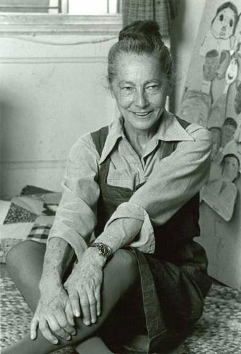
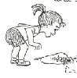
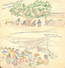
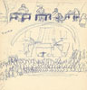
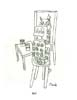
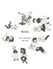
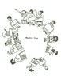
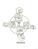
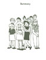

Loading image. Please wait
Anne Rogovin in her studio, 1978. Photo © Jim Kalett
About Anne's Work
An educator, Anne Rogovin taught children with severe mental disabilities during a 30-plus-year career with Erie 1 BOCES (Board of Cooperative Educational Services). She worked for BOCES because she refused to sign a loyalty oath required at the time by the Buffalo school system. Anne authored several books:
- Learning by Doing, Home and School Activities for All Children (Abington Press)
- 1001 Wonderful Wonders: Activities for ALL Children (Abington Press)
- Turn Off the TV and...(Abington Press)
- Dear Parents: Letters to Parents of Young Children (Allyside Press)
- What's the Hurry? Developmental Activities for Able and Handicapped Children (Pro Ed Publications)
- 1001 Activities for Children: Simple Games to Help a Child Explore the Wonders of Nature, the Imagination, the Senses, Art, Crafts, Music, and Much More (Grammercy Press)
She also developed Learning by Doing Lotto Games (Ideal Publishers). These books and games are for parents of special needs and for all children – showing them a myriad of ways to use the world around them to develop skills and interests.








Anne Rogovin in her studio, 1978. Photo © Jim Kalett
"Dear Parents" written by Anne Rogovin,
illustrated by Peggy Lipschutz
illustrated by Peggy Lipschutz
"Dear Parents" written by Anne Rogovin,
illustrated by Peggy Lipschutz
illustrated by Peggy Lipschutz
"Dear Parents" written by Anne Rogovin,
illustrated by Peggy Lipschutz
illustrated by Peggy Lipschutz
Drawing by Anne Rogovin on early trip to Mexico with Milton.
Drawing by Anne Rogovin on early trip to Mexico with Milton.
Art - from "Learning By Doing," Written by Anne Rogovin and illustrated by her student Carole.
Music - from "Learning By Doing," Written by Anne Rogovin and illustrated by her student Carole.
Meeting - from "Learning By Doing," Written by Anne Rogovin and illustrated by her student Carole.
Reading - from "Learning By Doing," Written by Anne Rogovin and illustrated by her student Carole.
Summary - from "Learning By Doing," Written by Anne Rogovin and illustrated by her student Carole.